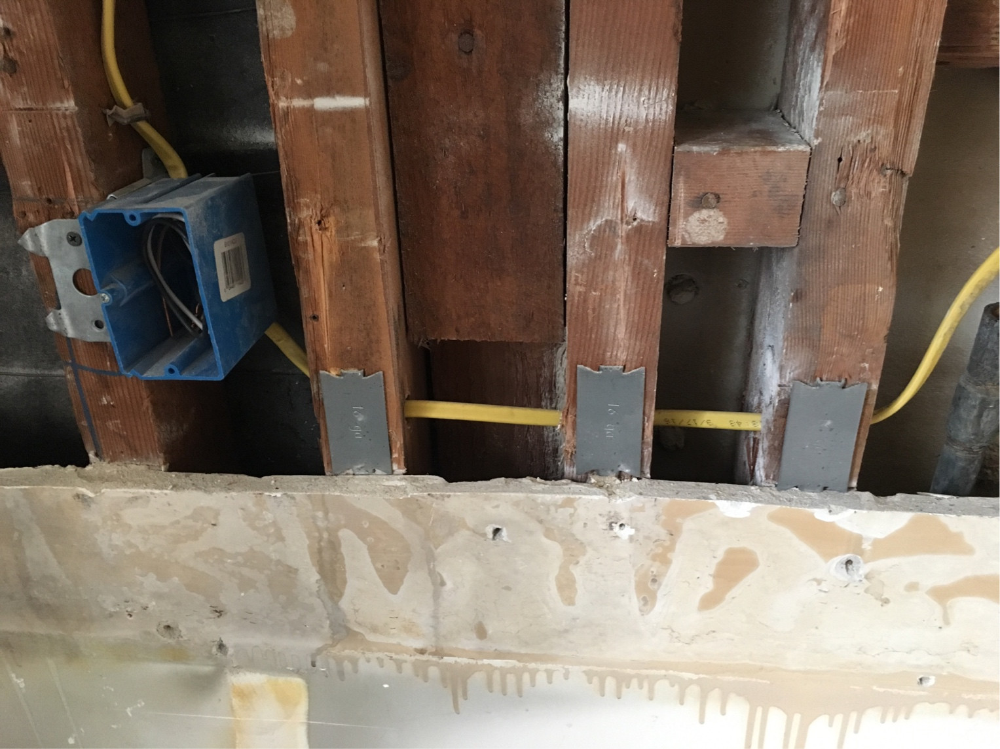

我的电工在他穿过螺柱钻出的任何地方都放置了下面的金属板。我的猜测是，这会增强螺柱，因为它被他钻的孔削弱了。
添加金属板的螺栓： 
- 这些金属板是什么？
- 为什么使用它们？
- 这是好习惯吗？
- 有哪些选择？
1
是的，他们还在穿过双头螺栓的任何管道上也安装了护甲。
—
埃文·卡斯雷克
最好在开放的整个墙壁上拍照或测量电缆的位置。如果您将来想在墙壁上连接东西，您将知道电缆的位置，而不必再次搜索。
—
胶带
必须取决于区域。...我希望电缆从上方或下方垂直延伸，而不是像这样水平穿过墙壁。
—
Criggie '16
当您用电线探测器翻墙时，它也有帮助。他们会看到干扰会导致金属板，导致下摆发出蜂鸣声，说明那里不安全。
—
Tschallacka